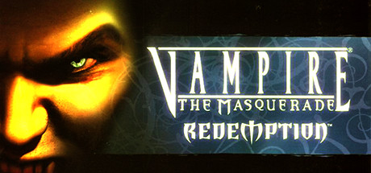

Vampire The Masquerade
The World of Darkness
by Totally Not A Vampire - Apr 12, 2024
Enter the World of Darkness and rise through vampire society or rail against it. Experience Seattle - a city full of alluring, dangerous characters and factions, not to mention the mortals at stake in the clash of powers beyond their knowing. In this sequel to the cult classic, your choices, plots and schemes will determine the balance of power and what becomes of the city and its people.